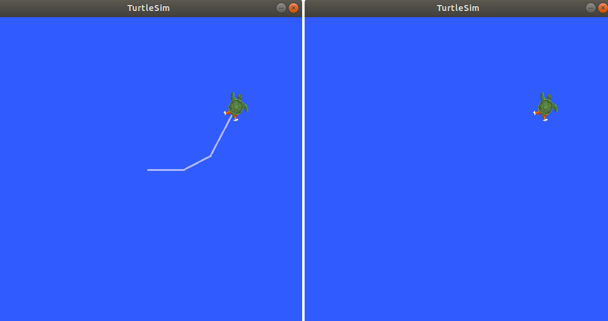

Understanding services
Goal: Learn about services in ROS 2 using command line tools.
Tutorial level: Beginner
Time: 10 minutes
Contents
Background
Services are another method of communication for nodes in the ROS graph. Services are based on a call-and-response model versus the publisher-subscriber model of topics. While topics allow nodes to subscribe to data streams and get continual updates, services only provide data when they are specifically called by a client.


Prerequisites
Some concepts mentioned in this tutorial, like Nodes and Topics, were covered in previous tutorials in the series.
You will need the turtlesim package.
As always, don’t forget to source ROS 2 in every new terminal you open.
Tasks
1 Setup
Start up the two turtlesim nodes, /turtlesim and /teleop_turtle.
Open a new terminal and run:
ros2 run turtlesim turtlesim_node
Open another terminal and run:
ros2 run turtlesim turtle_teleop_key
2 ros2 service list
Running the ros2 service list command in a new terminal will return a list of all the services currently active in the system:
/clear
/kill
/reset
/spawn
/teleop_turtle/describe_parameters
/teleop_turtle/get_parameter_types
/teleop_turtle/get_parameters
/teleop_turtle/list_parameters
/teleop_turtle/set_parameters
/teleop_turtle/set_parameters_atomically
/turtle1/set_pen
/turtle1/teleport_absolute
/turtle1/teleport_relative
/turtlesim/describe_parameters
/turtlesim/get_parameter_types
/turtlesim/get_parameters
/turtlesim/list_parameters
/turtlesim/set_parameters
/turtlesim/set_parameters_atomically
You will see that both nodes have the same six services with parameters in their names.
Nearly every node in ROS 2 has these infrastructure services that parameters are built off of.
There will be more about parameters in the next tutorial.
In this tutorial, the parameter services will be omitted from the discussion.
For now, let’s focus on the turtlesim-specific services, /clear, /kill, /reset, /spawn, /turtle1/set_pen, /turtle1/teleport_absolute, and /turtle1/teleport_relative.
You may recall interacting with some of these services using rqt in the Use turtlesim, ros2, and rqt tutorial.
3 ros2 service type
Services have types that describe how the request and response data of a service is structured. Service types are defined similarly to topic types, except service types have two parts: one message for the request and another for the response.
To find out the type of a service, use the command:
ros2 service type <service_name>
Let’s take a look at turtlesim’s /clear service.
In a new terminal, enter the command:
ros2 service type /clear
Which should return:
std_srvs/srv/Empty
The Empty type means the service call sends no data when making a request and receives no data when receiving a response.
3.1 ros2 service list -t
To see the types of all the active services at the same time, you can append the --show-types option, abbreviated as -t, to the list command:
ros2 service list -t
Which will return:
/clear [std_srvs/srv/Empty]
/kill [turtlesim/srv/Kill]
/reset [std_srvs/srv/Empty]
/spawn [turtlesim/srv/Spawn]
...
/turtle1/set_pen [turtlesim/srv/SetPen]
/turtle1/teleport_absolute [turtlesim/srv/TeleportAbsolute]
/turtle1/teleport_relative [turtlesim/srv/TeleportRelative]
...
4 ros2 service find
If you want to find all the services of a specific type, you can use the command:
ros2 service find <type_name>
For example, you can find all the Empty typed services like this:
ros2 service find std_srvs/srv/Empty
Which will return:
/clear
/reset
5 ros2 interface show
You can call services from the command line, but first you need to know the structure of the input arguments.
ros2 interface show <type_name>.srv
Try this on the /clear service’s type, Empty:
ros2 interface show std_srvs/srv/Empty.srv
Which will return:
---
The --- separates the request structure (above) from the response structure (below).
But, as you learned earlier, the Empty type doesn’t send or receive any data.
So, naturally, its structure is blank.
Let’s introspect a service with a type that sends and receives data, like /spawn.
From the results of ros2 service list -t, we know /spawn’s type is turtlesim/srv/Spawn.
To see the request and response arguments of the /spawn service, run the command:
ros2 interface show turtlesim/srv/Spawn
Which will return:
float32 x
float32 y
float32 theta
string name # Optional. A unique name will be created and returned if this is empty
---
string name
The information above the --- line tells us the arguments needed to call /spawn.
x, y and theta determine the 2D pose of the spawned turtle, and name is clearly optional.
The information below the line isn’t something you need to know in this case, but it can help you understand the data type of the response you get from the call.
6 ros2 service call
Now that you know what a service type is, how to find a service’s type, and how to find the structure of that type’s arguments, you can call a service using:
ros2 service call <service_name> <service_type> <arguments>
The <arguments> part is optional.
For example, you know that Empty typed services don’t have any arguments:
ros2 service call /clear std_srvs/srv/Empty
This command will clear the turtlesim window of any lines your turtle has drawn.

Now let’s spawn a new turtle by calling /spawn and setting arguments.
Input <arguments> in a service call from the command-line need to be in YAML syntax.
Enter the command:
ros2 service call /spawn turtlesim/srv/Spawn "{x: 2, y: 2, theta: 0.2, name: ''}"
You will get this method-style view of what’s happening, and then the service response:
requester: making request: turtlesim.srv.Spawn_Request(x=2.0, y=2.0, theta=0.2, name='')
response:
turtlesim.srv.Spawn_Response(name='turtle2')
Your turtlesim window will update with the newly spawned turtle right away:

Summary
Nodes can communicate using services in ROS 2. Unlike a topic - a one way communication pattern where a node publishes information that can be consumed by one or more subscribers - a service is a request/response pattern where a client makes a request to a node providing the service and the service processes the request and generates a response.
You generally don’t want to use a service for continuous calls; topics or even actions would be better suited.
In this tutorial you used command line tools to identify, introspect, and call services.
Next steps
In the next tutorial, Understanding parameters, you will learn about configuring node settings.